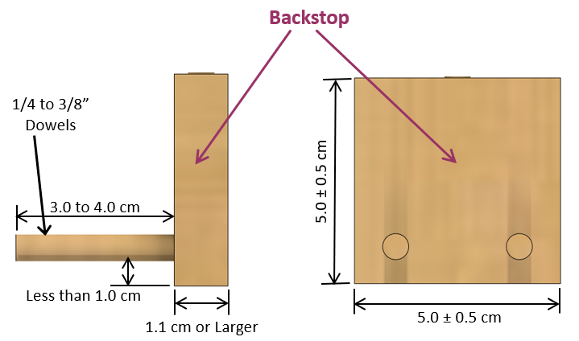
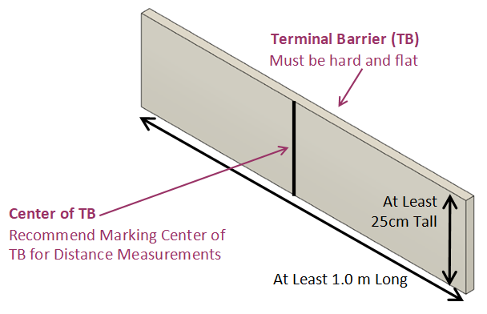
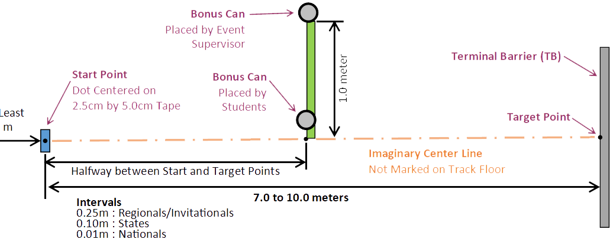

← All Events
Full official rules from the 2027 Division B Rules Manual
SCRAMBLER B
1. DESCRIPTION
Teams design, build, and test a mechanical device, which uses the energy from a falling
mass to transport an egg along a track as quickly as possible and stop as close to the center of a Terminal
Barrier (TB) without breaking the egg.
A TEAM OF UP TO: 2 APPROXIMATE TIME: 12 minutes
EYE PROTECTION: B IMPOUND: Yes CALCULATOR: Class III
2. EVENT PARAMETERS
a. Only One Scrambler: designed, and built by the team may be entered, built prior to the competition.
b. Impound: Team must impound before the first time slot.
c. Eye Protection: Class B is required (See Eye Protection policy on soinc.org).
d. Event Time: Teams will each have 8 minutes to adjust, repair, and run their Scrambler.
e. Track: The Event Supervisor will provide and set up the Track as listed in the Track section.
3. CONSTRUCTION PARAMETERS
a. Scrambler: must consist of an egg transport (Vehicle) and an energy propulsion system (launcher and
falling mass). These may be separate or combined into a single unit.
b. Size: the entire Scrambler (Vehicle and energy propulsion system) including the egg, falling mass, and
cushion to protect the floor, in the ready-to-run configuration, must completely fit within an imaginary
rectangular box with 100.0 cm x 50.0 cm base with a 100.0 cm height. No part of the Scrambler can be
taped or attached to the event floor.
c. Propulsion Energy: all energy used to propel the Vehicle must come from a falling mass not to exceed
2.00 kg. The gravitational potential energy of the falling mass may be converted to other forms of energy.
i. Additional sources of kinetic energy must be in their lowest energy state in the ready-to-run
configuration.
ii. Any part of the Scrambler whose gravitational potential energy decreases and provides energy to
propel the vehicle after the Scrambler is actuated is considered to be part of the falling mass.
iii. The falling mass cannot contact the venue floor at any time during the run. Teams must use a pad or
similar protective cushion to prevent contact with or damage to the floor. The protective cushion is
part of the Scrambler’s size. ES can prevent teams from running or performing an action if there is
a risk the floor could be damaged.
iv. To facilitate mass measurements, the Scrambler must be impounded with the mass detached.
d. Stopping Mechanism must be contained completely within the Vehicle and work automatically.
i. The Vehicle must not be remotely controlled or tethered.
ii. Pre-loaded energy storage devices may be used to operate other Scrambler functions (e.g., braking
system) as long as they do not provide kinetic energy to propel the Vehicle.
e. Egg Holder and Backstop must meet the following requirements:
i. Backstop must be built out of one piece of solid (no holes or filled holes), rigid, flat, and unpadded
wood. The flat surface must be 5.0 +/- 0.5 cm wide and 5.0 +/- 0.5 cm high. The thickness must be
at least 1.1 cm. Commercially purchased wood like plywood is allowed. Balsa cannot be used.
ii. The egg must rest on two (2) ¼” to ⅜” wooden round dowels which extend out from the flat surface
of the backstop. These dowels must extend between 3.0 and 4.0 cm from the backstop. The dowels
must be within 1.0 cm from the bottom of the backstop.
iii. The bottom of the wooden dowels must be between 5.0 and 10.0 cm above the track.
iv. The backstop must be mounted to the front of the vehicle to allow the egg to be the foremost part
of the vehicle. The backstop must be mounted in a rigid method to prevent movement during an
impact. Holes can be placed on the back, sides, bottom or top of the Backstop for the purpose of
attaching to the Vehicle.
f. Pencil Start: Competitors must design the Scrambler to start by using any part of an unsharpened #2
pencil with an unused eraser, provided by the ES, to actuate a release mechanism. The pencil may be the
release mechanism itself and may extend beyond the dimensions in 3.b. Actuating the release mechanism
must not impart additional energy to the Vehicle.
g. Vehicle Parts: All parts of the Vehicle must move as a whole: no anchors, tethers, tie downs, or other
separate pieces are allowed. The only parts allowed to contact the floor during the run are wheels/
treads, drive string, drive attachment, and any parts already in contact with the floor in the ready-to-run
configuration. All wheels must be in contact with the floor at launch. Pieces falling off during the run
constitutes a Construction Violation.
h. Electric or Electronic components or items cannot be used (with the exception of a calculator).
i. Design Knowledge: Answer questions on design, construction, and operation of the device per the
Building Policy found on www.soinc.org.
j. Purchased Kits or Open Source Kits are allowed for this event with the following requirements:
i. Teams must make at least two functional modifications to the kit during the build process.
These modifications need to be documented on the Kit Modification Form available on soinc.
org. The completed form must be impounded.
ii. Teams violating rule 3.j.i. will receive the Non-modification Penalty to their Run Scores.
4. THE COMPETITION
a. Impound before first time slot.
i. Teams must impound one Scrambler, spare parts, alignment device (if used), any papers (if used),
and Kit Modification Form (if used).
ii. Launcher and a falling mass may be shared between teams from the same school.
iii. Falling mass must be detached when impounding. Teams will be allowed to disconnect their mass if
an issue is found during check-in.
iv. Tools do not need to be impounded.
v. Inspections will NOT take place during impound as any of the 15 member team may impound.
b. After Impound and before the first time slot, the Target Distance will be announced and posted. The
Target Distance at a competition will be the same for all teams.
c. Check-In
i. Only the participants will enter and may bring tools as defined.
ii. Teams will be instructed by the ES when to retrieve their impounded items.
iii. Teams will present their Vehicle for inspection & measurement by the ES. Participants will be
notified at this point if any construction violations are found.
(1) Teams may use their Event Time to correct any construction violations. A team’s Event Time
will be paused during re-evaluation by the ES.
iv. Once participants start the Check-In process, they must not leave or gain any outside assistance or
materials until their Event Time is completed.
v. The ES will provide uncooked grade A large chicken eggs. Teams will select one egg at the
completion of Check-In. There is no penalty if an egg breaks prior to the device being actuated
before the first launch. A second egg will be provided. The second egg may be a used egg; this will
be the ES’s choice.
d. Event Time
i. Participants will have their Event Time to complete up to 2 runs. The Event Time ends after 2 runs,
the egg is broken or the time limit has been reached. Teams may adjust their Scrambler (e.g., repair,
change distance, aiming) within their Event Time.
(1) The time limit for the Event Time is 8 minutes.
(2) The ES will notify the participants when their Event Time starts.
(3) Vehicles in the ready-to-run configuration before the end of the Event Time will be allowed to
complete a run.
ii. Attaching the falling mass and egg are part of the team’s Event Time.
iii. Teams will secure the egg to the dowels on the Backstop with tape. The ES will supply the tape.
(1) No tape can be placed on the front or rear 1.0 cm of the egg.
(2) The egg’s rounded end must be touching the Backstop and visible to the ES when attached.
(3) The egg must be the foremost point of the Vehicle.
(4) At the ES’s discretion, the egg may be placed inside a thin transparent plastic bag.
SCRAMBLER B (CONT.)
iv. Sighting, aligning, and guiding devices, if used, must be placed and used within the defined Track
area. These devices cannot be electric or electronic. If placed on the Vehicle, they may be removed
at the team’s discretion. Devices remaining on the Vehicle will be considered part of the Scrambler.
All items not part of the Scrambler must be moved and placed behind the Start Point prior to starting
a run.
v. Teams may use their own tools to verify the Track dimensions during their Event Time.
vi. Substances applied to the Vehicle must be approved by the ES prior to use and must not damage or
leave residue on the floor, Track and/or event area. Teams may clean the Track during their Event
Time, but it must remain dry. Competitors are not allowed to use tape on the event floor.
vii. Teams must not roll or test the Vehicle on the floor of the Track on the day of the event or prior day
without tournament permission. If permitted, only participants may be present. During competition,
teams must not roll the vehicle on the floor before or after runs. Teams are allowed to roll the Vehicle
into the Launcher for the sole purpose of loading the Vehicle.
viii. Individual Run Testing
(1) Participants must place the tip of the egg above the Start Point within approximately 1 cm.
Parts of the Scrambler may be beyond the Start Point. The Start Point must remain
visible to the ES.
(2) The Vehicle must be able to remain at the starting position without being touched until
triggered.
(3) Teams may choose to earn the Can Bonus by navigating between the two cans located
on the Bonus Line. All cans are positioned as outlined in the Track section. There is
no penalty if teams choose to run without the cans. Placement of the inner can may be
different for each run.
(a) Outer can is placed by the ES.
(b) Inner can is placed by the competitors.
(4) Participants will notify the ES when ready to launch. At which point the ES will pause the
Event Time and review the Vehicle in the Ready-To-Run configuration for any rule violations.
(a) This includes measuring the Scrambler’s size.
(b) The ES will only notify the participants of any violations at the end of each run. Teams may
ask question(s) before the run if there are specific violations. The ES will not answer generic
questions like “Do I have a violation?”
(5) ES will measure the Inside Can Distance.
(6) Participants will use a #2 unsharpened pencil to trigger the Scrambler. Participants may only
contact the pencil and not the Scrambler during the triggering action.
(a) If the Vehicle fails to actuate or move when triggered, then a run has not occurred. The
Vehicle must move to be a measurable run. The participants may continue to work on their
device provided they have not reached the end of their Event Time.
(7) ES will review the run to determine if the run was Successful or a Failed Run.
(8) Run Time and Vehicle Distance will be measured and recorded for Successful runs.
(9) To earn the Can Bonus, all parts of the Vehicle must travel between the two cans. If the
Inside Can Distance has changed, then the Can Bonus cannot be awarded.
(10) Additional competition violations are:
(a) The egg is broken during the run. A 2nd run will not occur if broken on the 1st run.
(b) Any part of the Vehicle (besides the egg) touches the TB.
(c) The tip of the egg goes past the front of the TB.
(d) Competitors follow their Vehicle down the track before being called to retrieve their vehicle.
(11) All violations will be recorded. The ES must notify the participants of any violations at the
end of each run.
(12) Timing resumes once the participants pick up their device or begin making their own
measurements.
ix. The Event Supervisor will review with teams their data recorded.
x. Teams filing an appeal must leave their Vehicle and other impounded material in the event area.
SCRAMBLER B (CONT.)
5. SCORING
a. Low Score wins.
b. Each team’s Final Score is the better of the 2 Run Scores + Final Score Penalties.
c. Run Score = 100 + Distance Score + Time Score + Can Bonus + Run Penalties
d. Distance Score = 2.0 pt/cm x Vehicle Distance.
i. The Distance Score for a Failed Run is 2500 points.
e. Time Score = Run Time
i. The Run Time will be recorded as 0.00 seconds for Failed Runs.
f. Can Bonus = -0.5 x (110 – Inside Can Distance)
g. Run Penalties:
i. Competition Violation: 150 points added to the Run Score with one or more violations.
ii. Construction Violation: 300 points added to the Run Score with one or more violations.
(1) A team will be awarded a construction violation if the floor is damaged by their device or
actions either before or after the run.
iii. Non-modification Penalty: 50 points added to Run Score.
iv. Failed Runs can also be assessed Competition and/or Construction violations.
h. Final Score Penalties: Vehicle not Impounded: 5000 points added to the team’s Final Score.
i. Two or more teams tied with 2 Failed Run scores, without Competition or Construction Violations, will
remain scored as ties. Other ties are possible.
j. Tiebreakers in order: 1. Better Vehicle Distance of the scored run; 2. Lower Time Score of the scored run;
3. Better Vehicle Distance of the non-scored run; 4. Better Time Score of the non-scored run.
6. SCORING EXAMPLES
a. A Vehicle has 2 Successful runs during the team’s Event Time.
i. In the 1st run, the Vehicle stopped 67.6 cm from the Target Point with a Run Time of 7.27 seconds
with no cans.
ii. In the 2nd run, the Vehicle stopped 27.6 cm from the Target Point with a Run Time of 8.67 seconds
with an Inside Can Distance of 50.0 cm.
Base Score = 100 = 100.00
Distance Score = 67.6 cm x 2.0 pts/cm = 135.20
Time Score = 7.27 = 7.27
Can Bonus = No Cans = 0.00
1st Run Score = 242.47
Base Score = 100 = 100.00
Distance Score = 27.6 cm x 2.0 pts/cm = 55.20
Time Score = 8.67 = 8.67
Can Bonus = -0.5 x (110.0 – 50.0) = -30.00
2nd Run Score = 133.87
Final Score = 2nd Run Score (Better Score) = 133.87 pts
7. THE TRACK
a. In-Person tournaments: The ES will supply and set up the Track.
b. Virtual tournaments: Team will supply the Track that fully complies
with the requirements of this section. Any deviation will be scored
as a competition violation for all runs.
c. Track Definition:
i. The Track will be on a smooth, level, and hard surface.
ii. The Event Supervisors must mark the track as follows:
(1) Start Point - an approximately 5 cm x 2.5 cm tape with the
Start Point marked at the center of the tape.
SCRAMBLER B (CONT.)
(2) Target Point - an approximately 5 cm x 2.5 cm tape with the Target Point marked at the center
of the tape. The Target Point is placed at the Target Distance from the Start Point.
(3) Bonus Line – an approximately 2.5 cm width tape placed halfway between the Start
Point and the Target Point extending perpendicular from the imaginary center line at
least 1.0 meter to the left when facing the Target Point. The edge of the line closest to the
Start Point defines the line.
(4) Imaginary Center Line is a line not placed on the Track that is from the Start Point to
the Target Point
iii. The center of a Terminal Barrier (TB) is placed at the Target Point and must be perpendicular to
the imaginary Center Line that connects the Start Point and Target Point. TB must be a hard, flat,
vertical wall at least 25.0 cm tall and a minimum of 1.00 m long.
iv. The two (2) Bonus Cans will be empty with a diameter of 7.0 to 8.0 cm and a height at least
10.5 cm. For example, an empty can of corn. All cans are placed upright with their center on
the Bonus Line.
(1) Outside Can is placed by the ES with the inside edge at 100.0 cm from the track’s
imaginary center line.
(2) Inside Can is placed by the competitors with the outside edge between 0.0 and 100.0 cm
from the inside edge of the Outside Can.
v. The Track Area will have a width of 2.0 m and extend at least 1.0 m behind the Start Point.
vi. At the ES’s discretion, more than one Track may be used. If so, the team may choose which Track
they use but must use the same Track for both runs.
8. DEFINITIONS
a. Event Supervisor (ES) is responsible for ensuring the event runs correctly. The ES can assign one or more
event helpers to perform various competition tasks.
b. Tools cannot be electric and electronic tools except for a stand-alone calculator (Class III). To qualify as
a Tool, the item must not travel on the Track with the Vehicle, does not become part of the Scrambler,
and cannot be used to align or aim the Vehicle.
c. Target Distance is selected by the ES and will be between 7.00 and 10.00 meters. At Regionals/
Invitationals the interval will be 0.25m, for States 0.10 m, and for National 0.01 m.
d. Vehicle Distance is a point-to-point measurement from the Vehicle Measurement Point to the Target
Point, measured to the nearest 0.1 cm.
e. Run Time begins when the team actuates the Vehicle and ends when the Vehicle comes to a complete
stop.
i. Recoil or oscillations will be included in the Run Time.
ii. The Run Time is recorded in seconds to the precision of the timing device used.
iii. Three timekeepers should be utilized with the middle time used as the official Run Time.
f. Complete Stop is when the Vehicle is stationary for 3 or more seconds. The 3 seconds is not part of the
Run Time.
g. Successful Run: Any run when the Vehicle moves before the end of the Event Time and is not a Failed
Run.
SCRAMBLER B (CONT.)
h. Failed Run: A run will be scored as a Failed Run when one of the following occurs. Construction and/or
Competition Violations must still be recorded for Failed Runs.
i. If the egg is broken on the 1st run, then the 2nd run will be a Failed Run.
ii. The Vehicle starts before the ES is ready.
iii. The Vehicle’s distance cannot be measured (e.g., the participants pick it up before it is measured).
iv. The team pushes the Vehicle down the track.
v. A team having only one successful run during the 8-minute Event Time will be assessed a Failed
Run for a 2nd run score. If the Vehicle does not move during the Event Time, the team will be
assessed 2 Failed Runs.
i. Broken Egg is defined by cracking the egg enough to leave a wet spot on a paper towel.
j. Vehicle Measurement Point is defined as the foremost tip of the egg that is attached to the Vehicle.
This event is sponsored by International Motors.
SCRAMBLER B (CONT.)
📐 Official Diagrams

Backstop specifications — dowel placement and dimensions

Terminal Barrier (TB) — dimensions and marking

Run area layout and measurement zones
Source: Science Olympiad 2027 Division B Rules Manual ©2027. For the most up-to-date rules, rule corrections, and clarifications visit
soinc.org.